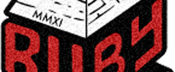

We build custom web and mobile applications. We typically work for funded startup companies and existing businesses.
If you haven't yet built your application, we work with you through all phases of the software development process - from formulating the idea through to deploying it to production servers. Because all projects have a budget we constantly work with you to identify the highest-priority features.
If you already have a production application, we can help you maintain it, add new features or modify it to allow it to scale for a larger audience.
Process & Tools
Scoping Meeting
I make it sound like the goal of the scoping meeting is to serve our purposes (give us a couple months of work) as opposed to phrasing this to the client's advantage somehow.
The goal of a scoping meeting is to build a pipeline of several weeks to months worth of work for our team. Before the scoping meeting you'll have sent us a number of high-level features you want incorporated into your product. After the scoping meeting we’ll deliver a set of user stories that will be added to your project's queue of stories to be developed.
After the scoping meeting we can jump headfirst into design and development or you can use the results for other purposes (e.g. fundraising, estimation, scheduling, etc.).
Ongoing Design and Development
This is where the meat of the process kicks in. Our team continuously works to implement all user stories that we have documented in Pivotal Tracker. The theory is that the project is complete once there are no more stories for us to complete or once you, as the client, declare that the project is complete. Furthermore, because all stories are prioritized within Pivotal Tracker, we continuously work on the highest-priority features.
On a more granular level, we use the following tactics to facilitate communication throughout the course of the software development process:
Periodic Scoping Meetings: when the backlog of user stories starts to lighten up, we have a scoping meeting to give our team several weeks/months more work.
Weekly Iteration Meetings: each week we have an iteration meeting where we review the prior week’s worth of work and discuss priorities for the upcoming week. Iteration meetings are typically no longer than an hour.
Daily Standup Meetings: standup meetings are brief - 1-10 minutes long - and serve to keep all stakeholders abreast of project progress and any obstacles impeding progress.
Portfolio
Zipmark
Zipmark is a startup company based out of NYC. Zipmark makes it easier to submit payments to friends, family and businesses. SmartLogic helped design and build Zipmark's various API's that allow 3rd parties to seemlessly integrate with Zipmark's product. We also built integrations between Zipmark and various other services including FreshBooks, BillMyClients, etc.
Toura
Toura is a startup company based out of NYC. SmartLogic helped build Toura's Mobile App Producer (MAP). Toura's clients first upload hundreds or thousands of media items (images, videos, etc.) to MAP. Then MAP is used to design a suite of mobile applications. Once the design process is complete MAP generates an iPhone app, iPad app, Android app and Blackberry app. We used PhoneGap to build the multitude of native apps.
FolioNetwork
FolioNetwork is a startup company based out of Baltimore. SmartLogic consulted with Folio to help their team determine which features to include in the first version of the product.
GiveCorps
GiveCorps is a startup company based out of Baltimore. GiveCorps rewards people that give to nonprofits by giving those people deals and discounts at local restaurants and reatilers.
SpotCrime
SpotCrime is a startup company based out of Baltimore. SpotCrime is the most comprehensive online source of crime information. SpotCrime has a database of over 15 million crimes and an email subscriber base of over 300,000 users. We designed and built several mechanisms to allow SpotCrime to (1) withstand a large influx of users; and (2) have failover capability should a server go down.
To enter ETC Canton, go through the doors between the LensCrafters and Babylon Nails & Spa. Go up the elevator to the third floor and proceed to the back corner of the building.
Important parking info: if you will be visiting for under two hours, park out front of the office. Otherwise park on the street or ask us for a parking permit. Please obey all parking signs - they do tow and ticket!
Ignite RailsConf is the unofficial kickoff event of RailsConf. Ignite is a series of 5-minute talks on various topics. SmartLogic organized Ignite RailsConf in 2011.
Meetups
If you've gone to a tech-related meetup in Baltimore then chances are you have eaten our pizza. We sponsor half a dozen meetups. Want us to sponsor yours too? Get in touch.
Podcast Studio
We have a podcast studio in our office that is FREE for anybody to use. The Castcast Network records out of our studio. Some of our equipment: 4 SM58s mics, headphones, deskstands, shockmount clips, windscreens and a Behringer X1204USB mixer.
Pet Projects
We've worked on Nomtracker - an app to help manage petty debts - and ShouldIRT (should I retweet?) - an app that helps keep the twitterverse free from annoying retweets.
We have several extra offices and desks in our office. Come work here for free, or if you want a private, dedicated office, get it on the cheap.
Open Source
We've worked on open source projects over the years.

Other Events/Groups We've Sponsored
We've sponsored Ruby DCamp (and designed the shirts) for a few years now. We built the websites for Ignite Baltimore, Annapolis, DC and RailsConf. We've also sponsored several other events.